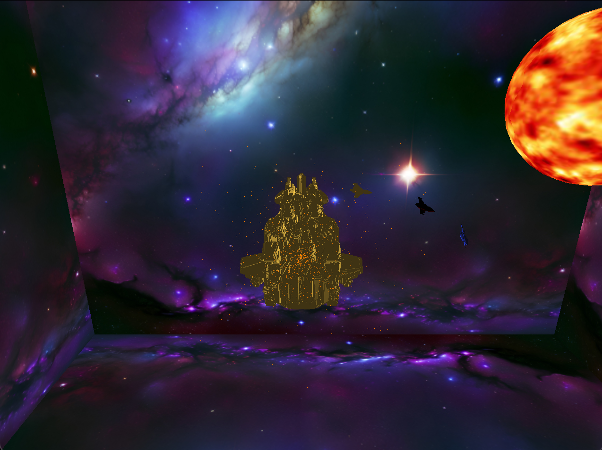

This scene depicts a golden merchant freighter hovering above a fleet of space fighters made of various materials. These object are in space and surrounded by stars and a nebula and have a sun situated in the system they are in that is providing the light. The program allows the user to move the ship around from a "game camera" perspective. There can be fighters seen orbiting the freighter threatening to take it over with its only protector being a golden fighter engaging in a dogfight with the red and blue pirates. There can be thrust seen in the form of particles coming out the back of the ship. If the "G" key is pressed there is a tour of a static scene.
Key Technology/Images
Initial Scene Start

The initial scene starts with the sun to the right of the freighter as the frieghter faces away from the sun with the fighters animated to orbit the freighter and corkscrew at the same time as it is all surrounded by a nebula skybox.
SkyBox
The skybox is a nebula that is mapped around the scene. It is made up of 6 images that are mapped to the inside of a cube.
Particle Thruster
The particle thruster is a visual effect that simulates the exhaust of the freighter's engines. It uses a particle system to create the illusion of thrust.
Heirarchically Animated Fighters
The fighters are animated using a hierarchical rigging system in which the fighters orbit the freighter and corkscrew around their own axis, allowing for realistic movement and interaction with the environment.
Sun/Light Movement
The sun is a dynamic light source that moves around the scene, casting realistic shadows and highlights on the objects using Blinn-Phong shading.
Freighter Rotation
The freighter is animated to rotate around its own axis, giving a large freedom of movement to the object moving through space from the perspective of a "game" camera.
Freighter Traversal Through Scene
The freighter is animated to move through the scene using WASD controls from the perspective of where it faces, showcasing its size and the surrounding environment.
Tour
The tour feature allows users to explore a static scene from different angles and perspectives around a pre-defined Bezier curve.
References
links to useful resources, such as the:
OpenGL Site for OpenGL documentation and resources